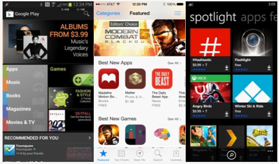
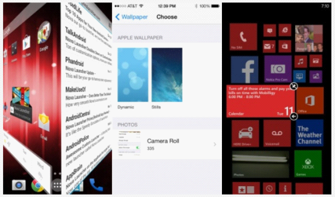

新しいスマートフォン（おそらく初めてのスマートフォン）の購入を検討しているなら、お金を有効に使って満足することが非常に重要になります。スマートフォンの選択は、実はその大部分がOSの選択です。iOS、Android、Windows Phoneのどれを選べばよいか迷っているなら、最近海外のテクノロジーサイトDigitalTrendsが3大メインOSのあらゆる側面を横断的に比較し、各機能とカテゴリーごとに勝者を選出しました。自分にぴったりのスマートフォンを購入するのに役立つことを願っています。
コストパフォーマンス
価格に関して言えば、Appleは常に譲らず、どの世代のiPhoneも当時の市場で最も高価なスマートフォンの1つでした。200ドル（約1230元）の契約価格と650ドル（約4000元）の本体価格は、ほとんどの競合製品よりも高めです。iPhone 5cのような廉価版で100ドル安くなっても、依然として安いとは言えません。
現在はマイクロソフトに買収されたノキアは、これまでずっと高品質で低価格な製品の生産が得意でした。ノキアは様々な価格帯のWPスマートフォンを投入し、AndroidやiOSなどの競合他社のエントリーレベル市場での展開を強く制限しました。また、サムスン、ZTE、LG、レノボ、ファーウェイなどを含むメーカーは、今後マイクロソフトのパートナーとなり、より多くの低価格スマートフォンを投入する予定です。
もちろん、Androidと比較すると、WPは製品の種類と規模のどちらにおいても比較になりません。多くのメーカーがAndroidプラットフォームで超高コストパフォーマンスのモデルを全力で生産しており、Androidの無料戦略も製品コストの削減にさらに有利に働いています。サムスン、ソニー、LG、HTC、ZTE、ファーウェイなどのメーカーは、すべてAndroid搭載製品の主要な供給元です。
勝者：Android
インターフェース

WPに導かれ、3つのメインOSはすべてシンプルでフラット、操作しやすくカラフルなスタイルへと変化し始めました。最大の違いは、多くのAndroidスマホメーカーが独自にOSをカスタマイズしているため、さらに多くのバリエーションがあることです。3大OSの現在のインターフェース構造は基本的に同じですが（ドロップダウンで通知センターを起動、アプリのDockやアイコンなど）、インターフェースの多様性においては、AndroidがiOSとWPを上回っています。
そして、先ほど発表されたAndroid Lは、まったく新しい「Material Design」スタイルを導入し、ミニマリズムとシンプルなアニメーションを完璧に組み合わせ、新たなGoogleプラットフォームとアプリケーションのスタイルを生み出すことを目指しています。ただし、Android LがOS市場にどれほどの影響を与えるかはまだ明らかではありません。
一方、AppleはiOS 7からシステムのデザインスタイルをフラットで鮮やかなものに変え、奥行きの切り替えも非常にクールに見え、アイコンの変更も非常に理解しやすいものでした。この変化は2007年の初代iPhone登場以来、最も顕著な違いです。それでも、多くの人々はiOSの変更にあまり満足しておらず、以前のスキューモーフィズム（現実模倣）デザインを好んでいます。
WPはグリッドベースのタイルスタイルのデザインを採用し、サイズも調整可能です。Windows 8システムのように見えますが、デスクトップウィジェットはありません。一部のユーザーの目には、WPのスタイルはiOSやAndroidよりもはるかにファッショナブルに映ります。
勝者：引き分け
アプリケーション
アプリの数と質において、WPはiOSとAndroidという2つの大きな山に大きく遅れを取っています。
Android：120万；
iOS：120万；
Windows Phone：24.5万。
iOSはアプリの数と質の両方で常にトップクラスであり、開発者にも最も好まれるプラットフォームです。最近のAndroidは追い上げる傾向にあり、Google Playストアの無料アプリやゲームも増えていますが、種類と質の面ではまだiOSと比較になりません。
勝者：iOS
アプリストアの使いやすさ

実際、3つのプラットフォームのアプリストアはいずれも完璧なユーザー体験を提供できておらず、数十万のアプリの中から本当に欲しいものを見つけるのは簡単ではありません。ただし、相対的には、AppleのApp StoreはGoogle Playよりもカテゴリ分類とおすすめ表示が具体的です。一方、MicrosoftのWindows Phoneストアは、インターフェースの美しさも使いやすさも最下位です。
勝者：iOS
アプリストアの多様性
Androidは、USBでPCに接続してコピーする場合でも直接ダウンロードする場合でも、アプリのインストールが非常に簡単です。さらにAndroidプラットフォームには多くのサードパーティ製アプリストアもあり、選択肢がありますが、マルウェア感染のリスクも高まります。より多くのストアの選択肢と簡単なインストール・アンインストール方法を求めるなら、結果は明らかです。Androidは2つの競合他社よりもオープンで、よりフレンドリーです。
勝者：Android
バッテリー駆動時間と管理

スマートフォンの最大の課題の1つとして、バッテリー駆動時間は常に最大の影響要因です。3つのプラットフォームでハードウェアが共通ではないため、直接比較するのは困難です。iOSは1ミリアンペア時ごとの電力消費を極限まで最適化していますが、Android端末はより大容量のバッテリーを簡単に採用できます。さらに、Androidには残量を正確に推定できるアプリが多数あり、ほとんどのメーカーが省電力モードも提供しており、残量が一定レベルまで低下すると性能を低下させたり、バックグラウンドアプリを終了したりできます。
さらにAndroid Lはバッテリー保護オプションを内蔵する予定であり、WPはバックグラウンド機能や不要なその他の機能をオフにして電力を節約できます。Appleは発表会でiOS 8のバッテリー統計方法をより詳しく紹介しましたが、効果的なバッテリー管理アプリや対策は依然として不足しています。また、あるバッテリー比較テストでは、iOS 7の消費速度も非常に速いことが示されました。
勝者：Android
システムアップデート
3大プラットフォームはシステムアップデートにおいてよくやっており、数か月ごとに大規模な変更を含むアップデートを配信して、バグを修正し新機能を追加しています。さらに、AppleとMicrosoftはシステムのアップデートのペースを自社で管理しているため、Androidよりも互換性とリアルタイム性に優れています。
Appleは毎年前年の製品を市場に残して販売していますが、システムの断片化（フラグメンテーション）の問題を最もよく解決しています。一方、当時MicrosoftがWindows Phone 7ユーザーを見捨てたことや、Googleの深刻な断片化問題は記憶に新しいところです。Nexus端末を使用している場合を除き、Googleからのアップデートを最初に受け取ることはできません。ソニー、サムスン、LGのいずれであっても、OEMメーカーが動かなければ、永遠にアップグレードできない可能性があります。さらに、一部のユーザーはキャリア（通信事業者）に制限されており、最新のAndroidやWPの機能を体験できる資格がない場合もあります。したがって、Appleがこの点で最も優れています。
勝者：iOS
カスタマイズ性

3つのシステムにはいずれもカスタマイズ可能な要素が多くありますが、この点では間違いなくAndroidが有利であることを認めざるを得ません。新しい端末を手にしたら、自分の経験に基づいて様々な設定を行うことができます。また、ホーム画面ランチャーをインストールしてシステムの操作インターフェースを変更したり、ロック画面の設定、複数の壁紙の切り替え、ホーム画面ウィジェットのサイズやクイック起動アイコンの自由な調整が可能です。一方、iOSとWPは限られたオプションしか提供できず、壁紙とクイック起動アイコンの設定のみ可能です。
WPはタイルのサイズと色を変更でき、WP 8.1では背景画像機能が追加されました。一方、iOS 8は将来的にいくつかのウィジェットを追加できますが、通知センターに限定されています。また、GoogleはこれまでずっとAndroidユーザーがサードパーティ製の入力方法（IME）をインストールすることを許可しています。Microsoftはデフォルトの入力方法を改善し続けていますが、これまでサードパーティに門戸を開放していません。そして、今年秋に正式リリース予定のiOS 8もサードパーティ製入力方法に対してオープンな姿勢を取り始めています。
勝者：Android
Root化、bootloader、脱獄
Android端末の場合、一度Root権限を取得すれば、システムを思い通りに変更できます。これはすべての人に適しているわけではありませんが、より多くのアプリを入手できたり、待つことなく最新システムや最新の操作インターフェースをインストールできたり、かさばるキャリアのプリインストールソフトウェアから解放されたり、端末の動作速度やバッテリー駆動時間を大幅に向上させたりすることもできます。
さらに、多くのAndroidメーカーは公式のbootloaderツールも提供しており、携帯電話をより深いレベルでカスタマイズできます。このような状況はMicrosoftとAppleが絶対に許可しないことです。Root化とbootloaderが可能なWPモデルはごく一部に限られ、iOSの脱獄は常にAppleと真っ向から対立しています。脱獄しても、App Storeを迂回してアプリや一部のシステムプラグインをインストールするだけです。
勝者：Android
電話とSMS

3つのプラットフォームはこの機能においてそれぞれ長所がある。Googleはすべての機能をHangoutsに統合し、Wi-Fiネットワークで電話、SMS、さらにはビデオ通話もできる。iOSプラットフォームのFaceTimeとiMessagesもほぼ同じことができる。Microsoftが提供するのはSkypeへの深い統合で、Windows以外のプラットフォームもサポートしている。一方、HangoutsはWindowsでは動作せず、iMessagesとFaceTimeもiOSとOS Xシステム間の通信のみをサポートしている。
勝利：引き分け
電子メール
Android、iOS、Windows Phoneのデフォルトの電子メールサービスはすべて非常に使いやすく、迅速に設定できる。複数の電子メールアカウントを切り替えたり、同じ受信トレイで確認したりできる。さらにAndroidとiOSにはサードパーティ製の電子メールサービスアプリも多数用意されている。
勝利：引き分け
周辺機器
調査データによると、iPadとiPhoneのユーザーはAndroidとWPのユーザーよりも関連周辺機器の購入に前向きである。Appleは周辺機器メーカーと連携して、iOSデバイス向けの完全なエコシステムを構築している。多くのメーカーがiPhone向けに自社製品を投入しており、Samsung Galaxy S5がそれに続いている。一方、AndroidとWPは標準のmicroUSBポートを採用しているが、Appleは独自のLightningポートを採用している。そのため、iPhoneを使用していなければ、汎用の充電器をより簡単に見つけることができる。また、変換アダプターを高額で追加購入する必要もない。周辺機器メーカーは依然としてiOSユーザーを主要なターゲットにしているが、今ではmicroUSBポートに対応していないデバイスを見つけるのも非常に困難になっている。
勝利：iOS
クラウドサービス

Appleはクラウドストレージと自動バックアップの面でかなり遅れを取っている。Microsoft OneDriveとGoogle Driveはどちらもクロスプラットフォームで15GBの無料容量を提供している（ただし、現在Google DriveはWPプラットフォームに対応していない）。一方、iCloudユーザーは5GBの無料容量しか利用できず、Windows、Mac、iOSに限定されている。さらに、追加容量を購入する場合、Google Driveが最も安く、100GBで年間わずか24ドル（約145元）、Appleは50GBで年間100ドル（約615元）、Microsoftは100GBで年間50ドル（約307元）である。
勝利：Android
写真バックアップ
AndroidデバイスでGoogle+サービスを利用していれば、すべての写真と動画を自動バックアップできる。iOSシステムでも同様にGoogle+を使用できる。OneDriveは3つのシステムすべてで自動バックアップをサポートしているが、AppleのiCloudは過去1ヶ月の直近1000枚の写真のみバックアップでき、動画は含まれない。iOS 8では他の2つのシステムと同様に写真を無期限にバックアップできるが、わずか5GBの容量ではGoogle DriveやOneDriveの15GBと比較すると、やはりあまりにも容量が少なすぎる。
同様に注目すべき点は、Google Driveは写真と動画を無制限にバックアップでき、元の解像度の写真だけが容量を消費することだ。
勝利：Android
音声アシスタント

最近、Siri、Google Now、Cortanaの比較が数多く行われている。3つの音声アシスタントはさまざまなコマンドを解釈または実行できる。Siriはカレンダーの予定設定、ウェブ検索、電話発信などを行うシンプルなアシスタントである。Google Nowはユーザーがわざわざ質問しなくても、役立つ情報を追加で提供できる。Google Nowにデータ収集を許可すれば、最寄りのレストランやお気に入りのチームの試合結果を自動的に提供してくれる。
CortanaはSiriやGoogle Nowの仕事をこなせるだけでなく、サードパーティ製アプリ内での呼び出しやリマインダー、さらには連絡先へのメッセージ送信もできる。MicrosoftはCortanaにかなりの労力を注いでいるようで、将来WPプラットフォームがiOSやAndroidに対抗する際の大きなアドバンテージになるだろう。
勝利：Windows Phone
接続性
すべてのモバイルプラットフォームがBluetoothとWi-Fiネットワーク接続をサポートしている。AndroidとWPはNFC技術をより適切にサポートしており、近距離データ交換やモバイル決済をより便利に行えるが、iOSは現時点では対応していない。NFCは高速ファイル転送、連絡先やウェブリンクの共有、さらにはポータブルスピーカーの音楽再生の制御にも使用できる。ただし、WPのNFCサポートは現時点ではあまり良くないが、最新のWP 8.1では改善される見込みだ。
勝利：Android
セキュリティ
ほとんどの悪意のあるアプリはAndroidデバイスを標的にしているため、セキュリティ問題は常にGoogleが直面する最大の障害となっている。ただし、ユーザーがGoogle Playストア以外でアプリをダウンロードしないようにすれば、それほど多くのセキュリティ問題に直面することはない。Samsungのような大手メーカーが自社で開発したアプリストアにも、同様にセキュリティ保証がある。
一方、Appleはこの点で非常に徹底しており、一般消費者のセキュリティは非常に保証されている。特に最新のTouch ID指紋認証や、IBMとの企業ユーザー向け連携は、Appleが顧客のセキュリティをより確実に保証するのに役立っている。これはiOSがAndroidと比較して持つ最大の利点の一つでもある。Windows Phoneシステムについては、現時点では普及度が十分でないため、WPに興味を持つ悪意のあるソフトウェアはそれほど多くない。ただし、Microsoftはビジネスユーザーの間でのセキュリティ面での評判も比較的良好である。
勝利：iOS
マップ

3つのプラットフォームすべてが優れた地図ソリューションを提供しており、オフラインダウンロード、交通状況分析、ナビゲーションなど、ほとんどの機能は比較的似ている。ただし、Googleマップはこの点で間違いなく優れており、より詳細な興味のある場所（POI）、より細かい情報、精度を提供できる。
勝利：Android
カメラ
カメラはAppleが大きな優位性を持つもう一つの分野である。画素数ではGalaxy S5、Lumia 1020などがiPhone 5sの800万画素を上回っているが、写真の色彩、ディテール、全体的な仕上がりにおいて最も満足できるのはiPhone 5sだけだと言わざるを得ない。
さらに、iOSのカメラアプリのインターフェースは高速で使いやすく、複雑な調整や設定が不要で、いつでもどこでも撮影できる。一方、Androidは多くのOEMメーカーが独自のカメラアプリを追加するため、多くの機能は実際には役に立たない飾りである。Appleは間違いなくまたもや勝者である。
勝利：iOS
使いやすさ
現在、3大プラットフォームは長年の発展を経て、どれも非常に直感的で使いやすくなっている。年配のユーザーにとっては、Androidのようなやや複雑な操作は適切ではないかもしれない。ただし、Samsungは「簡単モード」を開発してスマートフォンの操作プロセスを簡素化したり、サードパーティ製アプリをインストールして同じ目的を達成したりすることもできる。AndroidとiOSのどちらにも、高齢者向けのアプリが数多く存在する。
AndroidはiOSよりも複雑だと考える人もいるが、それはやや極端すぎる。望まなければ、より深いレベルのカスタマイズを行う必要はない。一方、WPはインターフェースがより直感的で、簡単な設定の後には、深く調整するための選択肢もそれほど多くない。
勝利：引き分け

まとめ
Androidシステムはこれまでで最も機能が包括的なプラットフォームであり、Samsung、LGなどのメーカーのサポートも加わり、消費者はより多くの異なる価格帯の製品選択肢、より自由なカスタマイズの余地とオプションを持ち、自分の好みに合わせて完璧なスマートフォンを作り上げることができる。
Googleのクラウドサービスとアプリケーションも消費者を惹きつける大きな魅力である。ただし、Androidの最大の利点が最大のマイナス影響ももたらしている。それがシステムの断片化（フラグメンテーション）問題である。フラッグシップモデルとエントリーモデルの使用体験の差が大きすぎるため、多くのユーザーがAndroidに悪い印象を持つ結果にもなっている。Googleはこの差を縮めるために努力し続けているが。
iOSは非常に安定した成熟したプラットフォームであり、統一された操作インターフェースを提供している。最高のアプリストア、最も多くの周辺機器の選択肢、最高のカメラが、Appleがすべてのことをよりシンプルにすることを可能にしている。さらに、Appleはシステムバージョンの更新を厳格に管理しており、消費者も企業ユーザーも、いち早く最新バージョンのシステムを体験することができる。
一方、iOSの欠点は、価格が高すぎること、閉鎖的すぎること、カスタマイズ性に欠けること、そしてあまり良心的ではないクラウドサービスである。
この比較において、Windows Phoneは登場から最も時間が経っていないため、いつも「蚊帳の外」のような立場にあるように見えるが、Microsoftはたゆまぬ努力でAppleとGoogleに追いつこうとしている。将来のWP 8.1システムでは、特にCortana音声アシスタントの優位性において、非常に明確な進歩を見ることができる。ただし、高品質なアプリの不足という問題はWPプラットフォームの最大の弱点である。しかし、使いやすさにおいては、WPはiOSやAndroidにまったく劣っていない。Microsoftの強力なクラウドサービスと、広く人気のあるOfficeツールは、多くの企業ユーザーを惹きつけることができる。ただし、現時点では、Cortana以外に、消費者にとって強い魅力となる理由は他にないように思われる。
出典：Tencent Digital、原文：digitaltrends
クリックしてノートを共有
<p style="font-size:14px;">ノートは本記事の内容の拡張である必要があります！</p><br> <p style="font-size:12px;"><a href="../tougao.html" target="_blank">記事投稿は、ここをクリックしてください</a></p> <p style="font-size:14px;"><a href="./runoob-user-test-intro.html" target="_blank">登録招待コードの取得方法</a></p> <h3 class="text-muted"><i class="fa fa-info-circle" aria-hidden="true"></i> ノートを共有する前に<a href=".." class="runoob-pop">ログイン</a>が必須です！</h3> <p><a href="./runoob-user-test-intro.html" target="_blank">登録招待コードの取得方法</a></p>